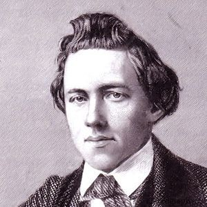

Пантеон Шахових Геніїв
"Уміння грати в шахи - ознака джентльмена. Уміння добре грати в шахи - ознака змарнованого життя."
©Пол Морфі

Пол Морфі
Період романтизму в шахах (1850-1886)
Шахи XIX століття були сповнені азарту, жертв та блискучих атак. Головною цінністю була не матеріальна перевага, а краса мату. Цей період, хоча й неофіційний, подарував нам перших справжніх зірок.
- Адольф Андерсен (1818–1879) Видатний німецький майстер, якого часто називають неофіційним чемпіоном. Його партія «Безсмертна гра» (1851 р.) є квінтесенцією романтизму: він пожертвував дві тури, ферзя і поставив мат! Андерсен цінував відкриту гру та тактичні можливості понад усе.
- Пол Морфі (1837–1884) Американський вундеркінд, що шокував Європу своєю геніальністю. Він ввів принципи швидкого розвитку фігур та централізації — ідеї, які лягли в основу сучасної стратегії. Його гра була водночас романтичною та дивовижно логічною. Морфі домінував лише кілька років, але його спадщина визначила напрямок розвитку шахів.